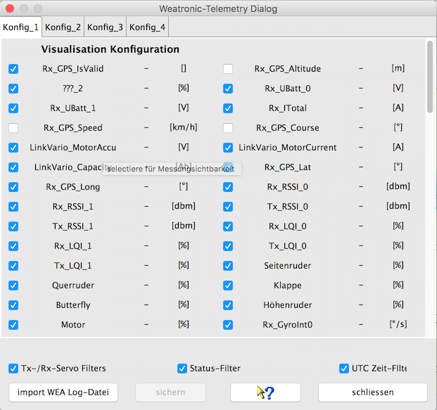

The Weatronic device dialog displays measurement names to get an overview. In addition it is used to set the filter properties.
There are four configurations which can be used in combination with the DevicePropertiesEditor to configure trigger for special events. This can not prepared initially since it depends on the used sensors. For instance the motor climbs can be counted, motor run time, archived high during motor runtime... Please refer to the main documentation to get familiar with this feature.

Below the system application properties directory you will find /DataExplorer/Mappings directory. Here you will find a XML-File which needs to be edited according your needs. There are key value pairs, build using the actual measurement names to direct the synchronization. Please refer to the following sample: <entry key="RXSub1_UBatt_1">RXSub1_UBatt_0</entry> <entry key="RXSub2_UBatt_0">RXSub1_UBatt_0</entry> <entry key="RXSub2_UBatt_1">RXSub1_UBatt_0</entry>